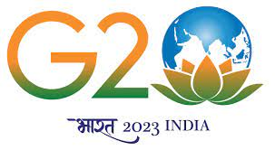

Qualities of Narendra Modi
Strong Leadership
-
Visionary Thinking
Effective Communication
- Mann Ki Baat: Connecting Directly with the People
- Social Media Savvy: Harnessing the Power of Technology
- Effective Storytelling: Connecting on a Personal Level
- Clarity and Simplicity: Making Complex Issues Accessible
- International Diplomacy: Representing India on the Global Stage
- Adaptive Communication: Tailoring Messages to the Audience
Commitment to Development
Resilience and Determination
Modi's leadership is grounded in the principle of inclusivity. His mantra, "Sabka Saath, Sabka Vikas" (Together with All, Development for All), underscores his commitment to inclusive growth. He emphasizes the importance of leaving no one behind in India's development journey, regardless of social or economic status.
One of the hallmarks of Narendra Modi's leadership is his visionary thinking. From the outset, he articulated a clear vision for India—a vision of a prosperous and developed nation. His "Make in India," "Digital India," and "Clean India" initiatives reflect his forward-thinking approach. Modi envisions an India that leads in innovation, technology, and sustainable development.
Narendra Modi's strong leadership has not only earned him the respect and admiration of millions within India but has also garnered global recognition. His visionary thinking, decisiveness, exceptional communication skills, resilience, and inclusive approach have reshaped the nation's trajectory. As he continues to lead India, his leadership remains instrumental in shaping the nation's future and its place on the global stage.
Resilience in the face of challenges is another characteristic that defines Narendra Modi's leadership. He remains undeterred by adversity and continues to work tirelessly towards his vision. This resilience was particularly evident during the challenging times brought about by the COVID-19 pandemic, where he led the nation with determination.
Achievements and Contributions
Launch of Swachh Bharat Abhiyan
Implementation of Make in India initiative
Rollout of Digital India program
Introduction of GST (Goods and Services Tax)
Successful Management of COVID-19 Pandemic
Narendra Modi launched the Swachh Bharat Abhiyan in 2014, a nationwide cleanliness drive aimed at improving sanitation and hygiene. It focused on building toilets, promoting waste management, and creating awareness, leading to significant progress in India's cleanliness and sanitation efforts.
The Make in India initiative, initiated in 2014, aimed to transform India into a global manufacturing hub. It encouraged foreign investment and emphasized local production, fostering economic growth, job creation, and the development of manufacturing sectors.
Launched in 2015, the Digital India program sought to digitize India's governance and services. It expanded internet access, promoted digital literacy, and facilitated online government services, enabling citizens to access information and services more efficiently.
In 2017, India implemented the Goods and Services Tax (GST), a unified taxation system. GST simplified the tax structure, eliminated cascading taxes, and improved tax compliance, promoting ease of doing business and streamlining India's economy.
Narendra Modi's leadership during the COVID-19 pandemic was marked by swift and decisive actions. He implemented lockdown measures, ramped up testing and healthcare infrastructure, and launched vaccination drives. India's response, while facing challenges, aimed at minimizing the impact and saving lives.
Recent G20 Summit
Narendra Modi recently represented India at the G20 Summit, where he discussed global issues and collaborations with world leaders.
Overview
The G20 Summit is an international forum for governments and central bank governors from 19 countries and the European Union. It provides a platform for leaders to discuss global economic issues and cooperation. The recent G20 Summit featured Narendra Modi, the Prime Minister of India, among other world leaders.
Key Highlights
- Discussions on economic challenges and opportunities in a post-pandemic world.
- Climate change and sustainability initiatives.
- Bilateral meetings and diplomatic discussions.
Recent G20 Summit
Narendra Modi recently represented India at the G20 Summit, where he discussed global issues and collaborations with world leaders.
